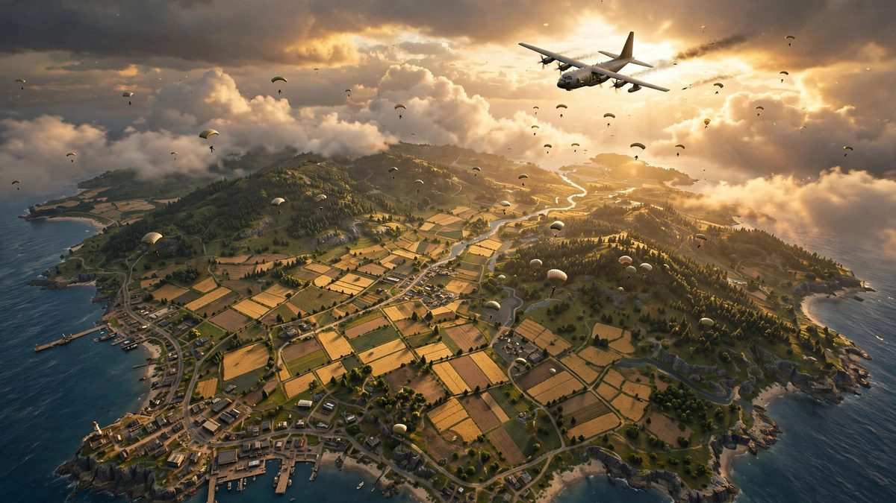

Erangel Best Landing Spots: Where to Drop for Loot and Survival

Erangel is the original PUBG map and still the best place to learn the game. It is an 8 by 8 kilometre island with a mix of big cities, small villages, open fields, hills and two bridges connecting the mainland to the southern island. Where you land decides how your match starts: a hot drop can give you a great weapon in seconds but also an early fight, while a quiet drop gives you time to loot safely but leaves you rotating late with weaker gear. This guide breaks down the best landing spots on Erangel for every playstyle, so you can drop with a plan instead of guessing.
Hot Drops for Confident Players
If you want fast action and top-tier loot, the military base on Sosnovka Island is the most famous hot drop in PUBG. The three large warehouse buildings and the barracks hold a high density of assault rifles, DMRs, level 3 helmets and vests, and 8x scopes. The risk is real: several squads land here almost every match, and the first minute is a scramble for the nearest gun. Land on the roof of the central warehouse, grab whatever weapon spawns, and fight immediately rather than looting slowly. Pochinki is the other classic hot drop. It sits near the centre of the map, which makes rotations easy, and its houses and the church contain plenty of rifles, SMGs and attachments. Expect two or three squads and close-range fights in the streets and gardens. School and Rozhok are also popular for the same reason: dense loot in a small area and quick fights that sharpen your close-quarters skills.
How to survive a hot drop
- Mark your exact building before you jump so your squad lands together.
- Land on a roof or next to a weapon spawn, never in an open field.
- Pick up any gun first, even a pistol or shotgun, before looking for armour.
- Call out enemy positions the moment you see them; silence loses hot drops.
- Do not chase a knock into another building while the rest of the squad is unarmed.
Balanced Drops for Most Players
Most players do best at medium-traffic locations that offer solid loot with only one or two enemy teams nearby. Georgopol is a great example: the western containers and the apartment blocks hold excellent loot, and you can rotate to the hospital or the warehouses if the first area is crowded. Yasnaya Polyana is another strong choice. It is a large town with rows of houses, good sightlines for mid-range fights, and plenty of vehicles on its edges. Lipovka and Primorsk on the coast are quieter but still well stocked, and their position on the map edge means fewer teams rotate through them. Mylta and its power plant offer strong loot too, with the added bonus of a nearby bridge for crossing to Sosnovka Island. These spots give you time to find a full loadout, a level 2 vest and helmet, and enough healing items before your first real fight.
Safe Drops for Beginners and Rank Pushers
If your goal is survival, a top-ten finish or a rank push, land somewhere quiet and loot methodically. Small villages like Kameshki in the far north-east, Zharki in the north-west, and the farm compounds around Stalber and the Mansion are rarely contested. They will not give you a level 3 helmet in the first minute, but you can still leave with an assault rifle, a scope, a backpack and enough bandages and first aid kits to survive the whole match. The key is to loot quickly and keep moving: grab a vehicle early, because safe drops are usually far from the first circle. The Mansion, south of the centre, deserves a special mention. It has surprisingly good loot for its size and sits in a strong central position, so you can rotate in any direction once the zone is known.
Best Loot Locations at a Glance
| Location | Loot Quality | Traffic | Best For |
|---|---|---|---|
| Military Base | Excellent | Very high | Aggressive squads |
| Pochinki | Very good | High | Centre rotations |
| Georgopol | Very good | Medium | Balanced play |
| Yasnaya Polyana | Good | Medium | Mid-range fights |
| Mansion | Good | Low | Safe central loot |
| Kameshki | Average | Very low | Beginners, rank push |
Rotating After You Land
Looting is only half the job. The moment the first circle appears, plan your rotation. Erangel has vehicles everywhere: cars spawn in towns, near garages and along roads, and boats sit on the coasts. If you landed on Sosnovka Island, cross the bridge early before other teams camp it, or take a boat from the eastern or western shore. If you landed north, move toward the centre using ridges and tree lines for cover rather than running across open fields. Erangel rewards patience: you do not need to win every early fight. A full loadout, a vehicle and a good position in the third circle are worth more than two early kills and a death in the second zone.
Frequently Asked Questions
What is the best landing spot on Erangel for beginners?
Small, quiet places like Kameshki, Zharki or the Mansion are best for beginners. You get enough loot to fight the mid-game without facing three squads in the first minute, and you can practise rotating and positioning with less pressure.
Where is the best loot on Erangel?
The military base on Sosnovka Island has the highest loot density on the map, with the best chance of level 3 gear and powerful scopes. Georgopol, Pochinki and the School are close behind, but all of them attract heavy traffic.
Should I land on Sosnovka Island or the mainland?
Land on the island only if you are confident in early fights and ready to cross a bridge or take a boat. The mainland is safer and gives you more rotation options, which makes it the better choice for most players and for rank pushing.
Download PUBG: Battlegrounds
Play free on PC or mobile — download the official game from the links below.